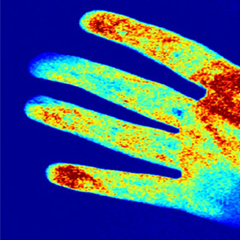

Perfusion is the process in which blood flows into our tissues.
In this work we developed a new method to measure the speed of blood flow in skin tissue.
The image on the right is a speed map where red indicates fast blood flow and blue indicates slower blood flow.
The basic method is based on a standard camera, a laser source, and a simple algorithm. Its novelty is in a new illumination scheme that enables a robust measurement process.
This new method aims to use only the direct reflectance (or light that did not go through complicated scattering process). In order to capture the direct reflectance, the scene is illuminated by multiple lasers, activated at different times to take images. This step is followed by some computation to reject the scattering and to generate a robust flow speed measurement.
Once the original concept was demonstrated we explored various applications including diagnosis and monitoring of different skin conditions. As part of this effort I lead a few projects in India (conducted in Mumbai as part of REDX Health workshops conducted during January 2014, May 2014, and January 2015).
Recently we also demonstrated this method is applicable for endoscopic systems, so that physicians can examine tissues inside the body. This work also showed some quantitative results which are usually challenging in similar flow speed imaging.